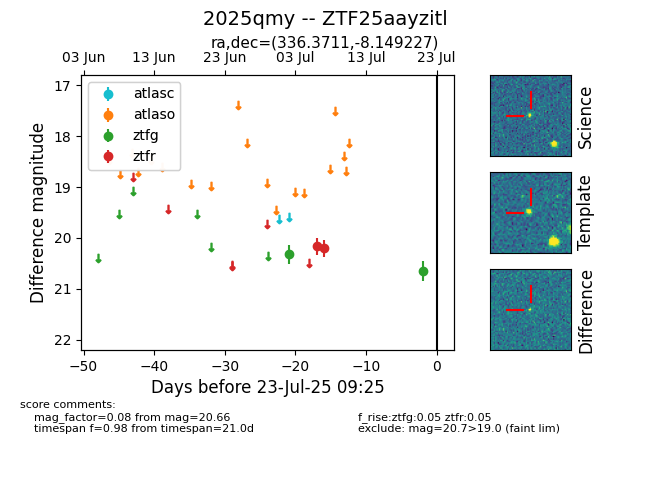

Target ZTF25aayzitl at 2025-07-23 11:48, see:
FINK: fink-portal.org/ZTF25aayzitl
Lasair: lasair-ztf.lsst.ac.uk/objects/ZTF25aayzitl
ALeRCE: alerce.online/object/ZTF25aayzitl
TNS: wis-tns.org/object/2025qmy
YSE: ziggy.ucolick.org/yse/transient_detail/2025qmy
alt names
ZTF25aayzitl (ztf,fink)
2025qmy (tns,yse)
coordinates:
equatorial (ra, dec) = (336.3711,-8.14923)
galactic (l, b) = (54.8406,-50.61875)
photometry
last ztfg=20.66, ztfr=20.21
2 ztfg, 2 ztfr detections
